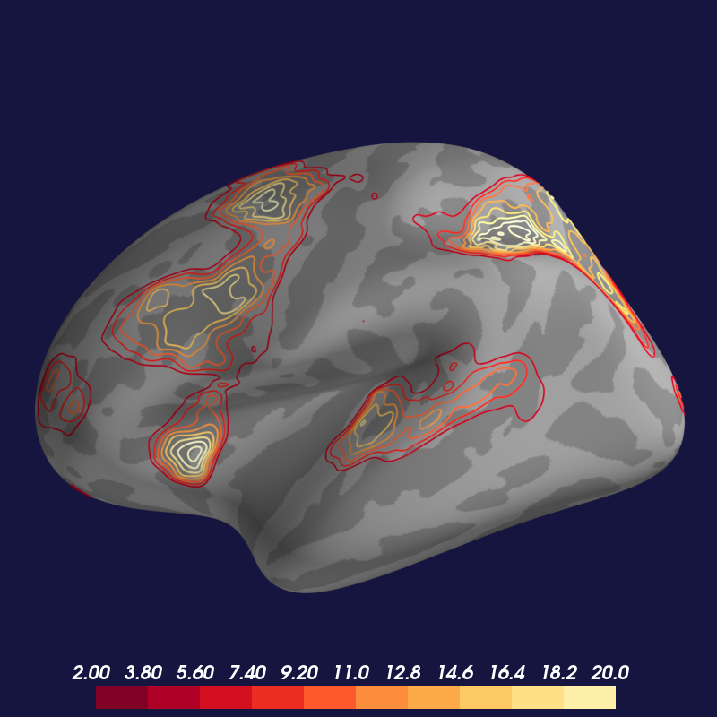

Display Activation Contours¶
Load a statistical overlay as a “topographic” contour map.
import os.path as op
from surfer import Brain
print(__doc__)
"""
Bring up the visualization.
Contour maps looks best with the "low_contrast" cortex
colorscheme, so we will pass that as an option to the
Brain constructor.
"""
brain = Brain("fsaverage", "lh", "inflated",
cortex="low_contrast", background="#151540")
"""
Get a path to the overlay file
"""
overlay_file = op.join("example_data", "lh.sig.nii.gz")
"""
Add the contour overlay with the default display settings
Contours overlays only ever use the positive components of
your image, but they get threshold and colormap saturation
from your configuration settings just as normal overlays do.
"""
brain.add_contour_overlay(overlay_file)
"""
The Brain object can only display one contour overlay at a time,
So if we bring up another one, it will remove the original overlay
behind the scenes for us. Here let's specify a different number of
contours and use a different line width.
"""
brain.add_contour_overlay(overlay_file,
min=2, max=20,
n_contours=10,
line_width=2)
Total running time of the script: ( 0 minutes 0.874 seconds)